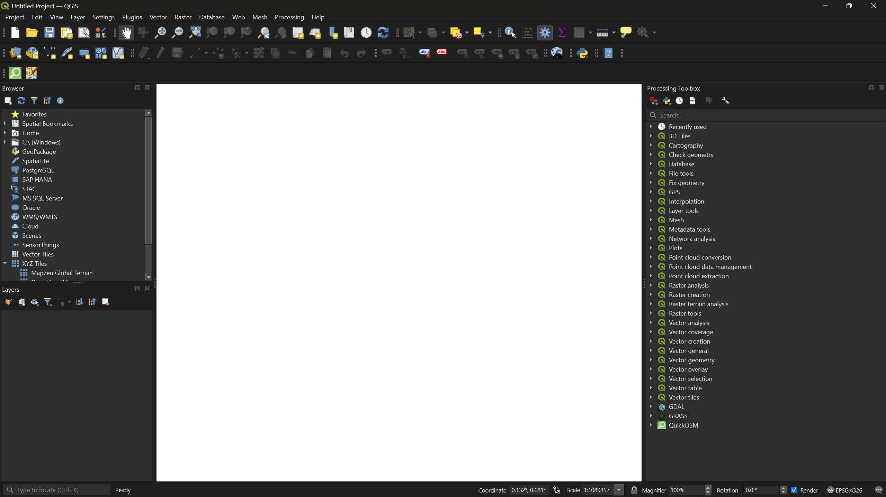
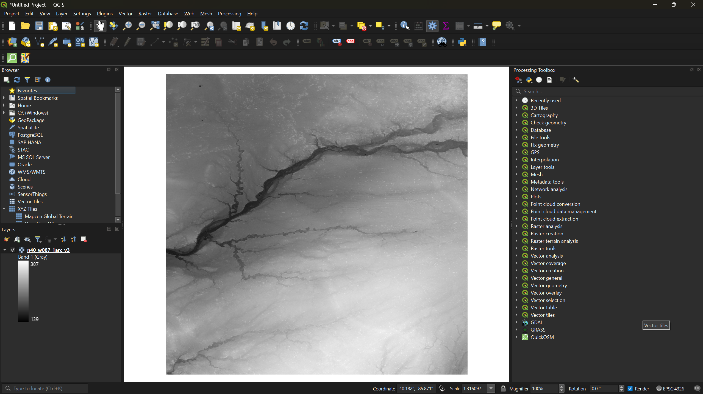
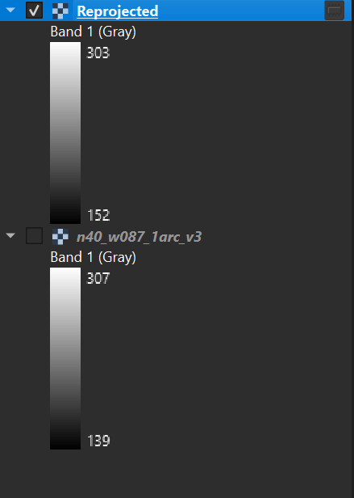
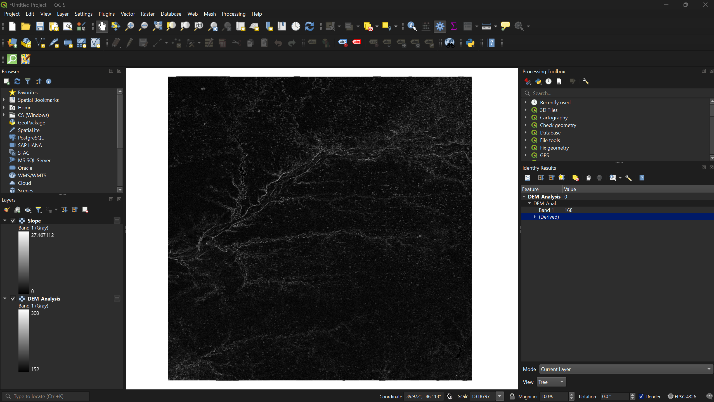
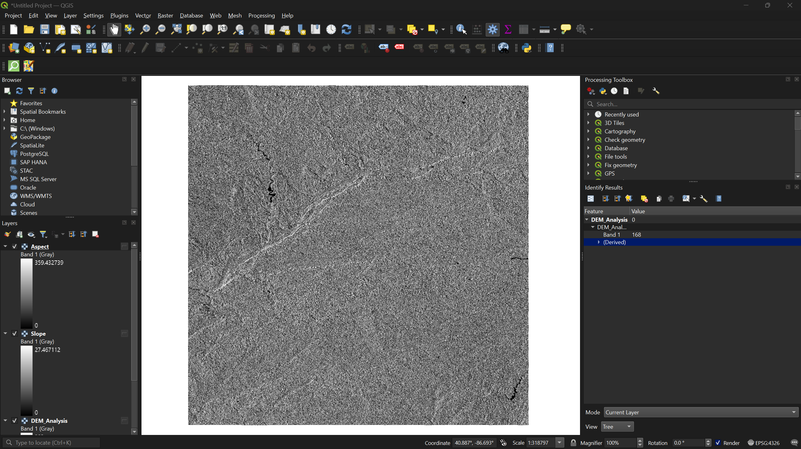
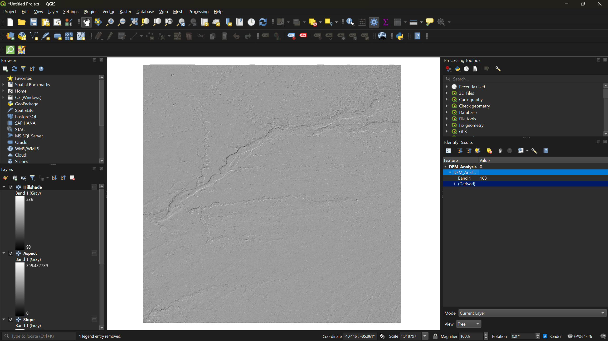
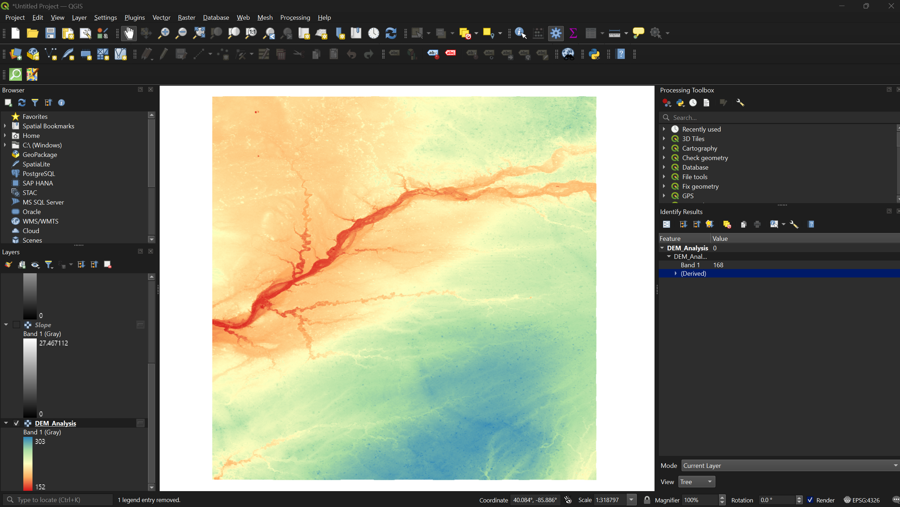

DEM Analysis and Visualization in QGIS
Last updated on 2026-06-24 | Edit this page
Overview
Questions
- How do I load and reproject a DEM in QGIS?
- What can slope, aspect, and hillshade tell us about a landscape?
- How do I visualize elevation classes using symbology?
Objectives
- Load a DEM into QGIS and reproject it to a metric coordinate system
- Generate slope, aspect, and hillshade layers from a DEM
- Apply pseudocolor symbology to visualize elevation classes
Introduction
QGIS offers several tools for analyzing and visualizing raster data, including digital elevation models (DEMs) and multispectral satellite imagery. In this session we will work with the SRTM DEM you downloaded from EarthExplorer in the previous session to generate slope, aspect, and hillshade layers, and then apply color symbology to visualize elevation classes.
Loading the DEM
Open the QGIS Desktop application. On startup you will see a popup with two tabs: Recent and Templates.
Click the Templates tab and select the blank template option.

From the menu bar, click Layer → Add Layer → Add Raster Layer. This opens the Data Source Manager.
Click the three-dot button next to Raster dataset(s), navigate to your DEM
.tiffile, and click Open, then Add.

The DEM will appear in grayscale on the map canvas. Darker pixels represent lower elevations and lighter pixels represent higher elevations.
Reprojecting the DEM
The raw DEM uses a geographic coordinate system with units in degrees. For meaningful terrain analysis we need a projected coordinate system that uses meters.
Right-click your DEM layer in the Layers panel and select Properties. Under the Information tab, scroll to Coordinate Reference System (CRS) to confirm the current CRS uses geographic units. Close the dialog.
-
From the menu bar, select Raster → Projections → Warp (Reproject).
- Click the icon next to Target CRS
- Select Predefined CRS from the dropdown
- Search for
26916and select NAD83 / UTM zone 16N - Click Run

A new layer called Reprojected will appear in the Layers panel.
- Right-click the original DEM layer and select Remove
Layer. Then right-click the reprojected layer, select
Rename Layer, and rename it to
DEM_Analysis.
Why UTM Zone 16N?
This workshop uses study areas in Indiana, which falls within UTM zone 16N. If your area of interest is elsewhere, choose the appropriate UTM zone for your location. Check out this website to find out the correct projection for your region!
Terrain Analysis
With a projected DEM we can now generate three derived layers: slope, aspect, and hillshade. All three are found under Raster → Analysis in the menu bar.
Slope
- Select Raster → Analysis → Slope. Ensure the input
layer is
DEM_Analysisand click Run.

Slope measures how steep the terrain is at each pixel — the rate of elevation change over horizontal distance. Values range from 0° (flat) to 90° (vertical cliff). Slope is commonly used to assess hiking trail difficulty, landslide risk, and water runoff potential.
Aspect
- Select Raster → Analysis → Aspect. Ensure the input
layer is
DEM_Analysisand click Run.

Aspect indicates which compass direction each slope faces. Values run from 0° to 360°, where 0°/360° is north, 90° is east, 180° is south, and 270° is west. Aspect is useful for analyzing sun exposure, vegetation patterns, and snowmelt behavior.
Hillshade
- Select Raster → Analysis → Hillshade. Ensure the
input layer is
DEM_Analysisand click Run.

Hillshade simulates how sunlight would illuminate the terrain from a given position. Brighter pixels receive more direct light; darker pixels are in shadow. Hillshade is primarily a visual aid — it makes topography easier to interpret at a glance but does not contain analytical data of its own.
Exercise 1: Compare Terrain Layers
Toggle each of the three layers (slope, aspect, hillshade) on and off in the Layers panel. For your study area, identify a feature that is most visible in one layer but hard to see in another. What does each layer emphasize?
Visualizing Elevation Classes
The grayscale DEM is hard to read. Applying a color ramp makes elevation patterns much easier to interpret.
In the Layers panel, uncheck every layer except
DEM_Analysisso only the original DEM is visible.Right-click
DEM_Analysis, select Properties, and navigate to the Symbology tab.-
Change the Render type from Singleband gray to Singleband pseudocolor. Then:
- Set the Color ramp to Spectral
- Set the Mode to Equal Interval
- Click Classify, then Apply, then OK

Equal interval divides the full elevation range into classes of equal size. You can adjust the number of classes to the right of the mode selector — try different values and classification modes (e.g., quantile) to see how the visualization changes.
Exercise 2: Experiment with Symbology
- Reopen the Symbology tab for
DEM_Analysis - Try changing the classification mode from Equal Interval to Quantile — how does the map change?
- Try a different color ramp (e.g., Viridis or Magma)
- Increase or decrease the number of classes
Which combination do you think communicates the terrain most effectively?
- DEMs should be reprojected to a metric coordinate system (such as UTM) before performing terrain analysis.
- Slope, aspect, and hillshade are derived layers that each reveal different characteristics of the terrain.
- Pseudocolor symbology with classified elevation ranges makes DEM data far more readable than the default grayscale.